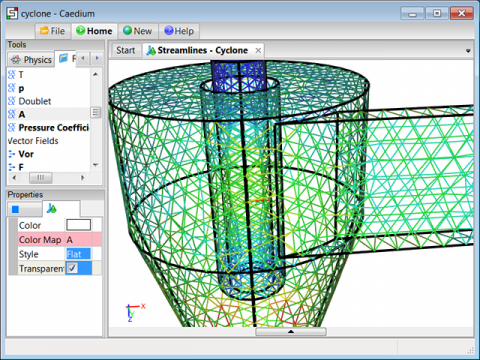

What is a mesh?
Geometry-based analysis techniques require that the geometry be broken up into a discrete representation known as a mesh or grid, consisting of simple shapes called elements or cells.
Triangle Surface Mesh in Caedium
Surfaces are split into polygons (e.g. triangles and quadrilaterals) and volumes are split into polyhedra (e.g. tetrahedra and hexahedra).
Algorithms that produce meshes are called meshers and there are three broad types:
- Structured – typically producing hexahedra
- Unstructured – producing mainly tetrahedra with some generating semi-structured prisms adjacent to walls
- Cartesian – regular axes-aligned cells with a special treatment near walls
The density and size of cells within a mesh have a primary influence on the subsequent results obtained. Typically the higher the cell density and the smaller the cell size, the more accurate results tend to be. However, the higher accuracy comes with the penalty of slower turnaround time. Striking the right compromise between accuracy and turnaround time can be difficult.
Feedback
Questions? Ideas? Problems?

Comments
Hi! I don't understand how to
Hi!
I don't understand how to create a structured mesh (I usually import models in STEP format and I always get unstructured mesh).
Can you suggest resources about the mesh generation (A practical approach would be preferable)? Where do I need to improve mesh density (for example, near to the walls)?
Thank you
Multiblock mesh
Structured (hex) meshes require 6-faced volumes. For complex geometry you will need to manually decompose your geometry into multiple blocks, which can be difficult. For more details on multiple volumes in Caedium see "Multiple Volume Flow Domain".
If you are using wall functions (which is the default) with your turbulence model then ideally you should aim for y+ values in the range 30-300 which may require extra refinement of the mesh close to walls. For more details on mesh sizing see "Accuracy Tool".
Ok, Thanks. So I need to see
Ok, Thanks.
So I need to see ON THE SURFACE that I choose as a wall if the y+ is in that range?
And inside the volume (far from the wall) are there other indication to follow?
(I'm using the default wall functions).
Thanks.
Off surface flow features
"So I need to see ON THE SURFACE that I choose as a wall if the y+ is in that range?"
If it lies in an important area then yes.
"inside the volume (far from the wall) are there other indication to follow?"
If you have cells to spare then you can always increase the resolution for off surface flow features, such as wakes and jets.
Wherever there are high gradients (rapid change, e.g., velocity, pressure) surface or off surface you'd like to have good mesh resolution.